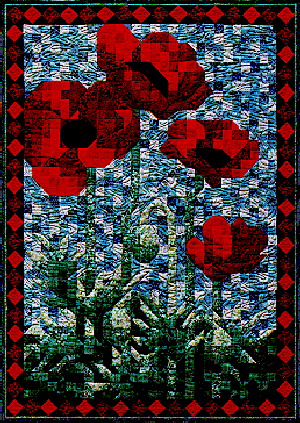

Poppy Mosaic Poppy Mosaic
Poppy Mosaic Poppy Mosaic
| #P117..........$7.95 33" X 45" I try to go for a run every morning. And while I'm running I love to look at the flowers. One of my favorite houses to run past is my friend Vicki's house. She has one of the most beautiful gardens! Last year I saw a perfect red poppy and knew that I would have to make a quilt depicting that poppy. Before I could get a picture it was gone, so this year I was quite pleased to see that one poppy was now several poppies. This time I made sure I got pictures before anything happened to those poppies. | 
|